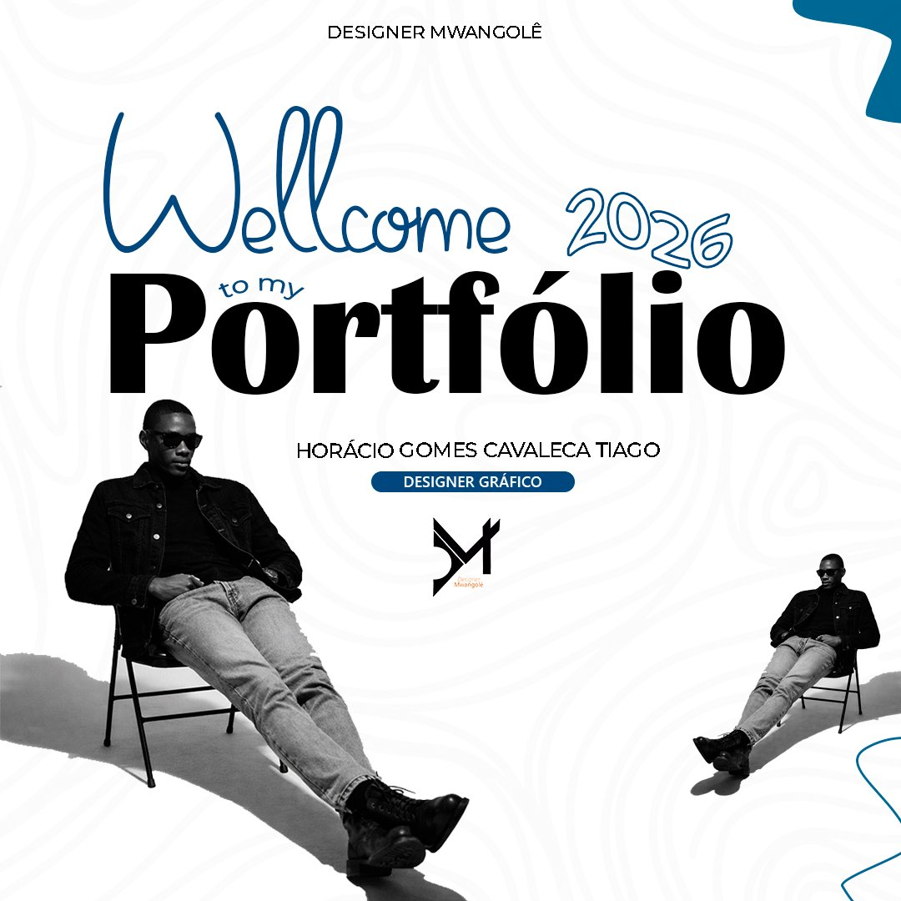

Designer Gráfico · Luanda, Angola
seja bem-vindo ao meu
Horácio Gomes Cavaleca Tiago
Crio identidades visuais, campanhas de social media e materiais publicitários que ajudam marcas em Angola a comunicar com mais força — do primeiro esboço à publicação final.

Chamo-me Horácio Tiago — entre amigos, "Bell". Sou estudante de Engenharia Informática na Universidade Católica de Angola e Designer Gráfico Freelancer.
Comecei o meu percurso profissional como designer gráfico na agência Ukara Media, onde desenvolvi competências na criação de materiais gráficos e identidade visual. Depois, trabalhei no Centro Médico Periodente, contribuindo para o desenvolvimento de conteúdos visuais e de comunicação da instituição. Atualmente colaboro com diferentes clientes e projetos como designer gráfico freelancer.
Estou constantemente à procura de novos desafios que me permitam crescer profissionalmente, aperfeiçoar as minhas competências e contribuir com soluções criativas e de qualidade.
Nove frentes de trabalho, um só objetivo: fazer a tua marca destacar-se. Escolhe uma área para ver exemplos reais de projetos.
Conta-me sobre a tua marca, o teu negócio ou a tua ideia — respondo o mais rápido possível.